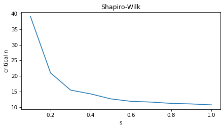

Title#
Here’s a question from the Reddit statistics forum.
Intro
Update the link…
Click here to run this notebook on Colab.
I’ll download a utilities module with some of my frequently-used functions, and then import the usual libraries.
Show code cell content
from os.path import basename, exists
def download(url):
filename = basename(url)
if not exists(filename):
from urllib.request import urlretrieve
local, _ = urlretrieve(url, filename)
print("Downloaded " + str(local))
return filename
download('https://github.com/AllenDowney/DataQnA/raw/main/nb/utils.py')
import numpy as np
import matplotlib.pyplot as plt
import pandas as pd
import seaborn as sns
from utils import decorate
Show code cell content
# install the empiricaldist library, if necessary
try:
import empiricaldist
except ImportError:
!pip install empiricaldist
Answer#
from scipy.stats import lognorm
def make_lognormal(m, s, loc=0):
scale = np.exp(m)
dist = lognorm(s=s, loc=loc, scale=scale)
return dist
dist1 = make_lognormal(1, 0.1)
dist1.mean(), dist1.std()
(2.731907272825927, 0.2738751291058153)
np.random.seed(17)
n = 1000
group1 = dist1.rvs(n)
from scipy.stats import norm
from empiricaldist import Cdf
def plot_normal(data, low, high, **options):
mean = np.mean(data)
std = np.std(data)
xs = np.linspace(low, high)
ps = norm(mean, std).cdf(xs)
plt.plot(xs, ps, color='gray', alpha=0.5)
Cdf.from_seq(data).plot(**options)
decorate(xlabel='x', ylabel='Density')
low, high = np.min(group1), np.max(group1)
plot_normal(group1, low, high, label='group1')
dist2 = make_lognormal(1, 1)
dist2.mean(), dist2.std()
(4.4816890703380645, 5.874743663340262)
np.random.seed(17)
n = 1000
group2 = dist2.rvs(n)
low, high = np.min(group2), np.max(group2)
plot_normal(group2, -10, high, label='group2')
from scipy.stats import kstest
def kswrapper(data):
return kstest(data, 'norm', args=(np.mean(data), np.std(data)))
from scipy.stats import shapiro
from scipy.stats import anderson
def run_tests(data):
_, p_value_shapiro = shapiro(data)
_, p_value_ks = kswrapper(data)
res = anderson(data, dist='norm')
p_values = pd.Series(res.critical_values, res.significance_level)
reject = res.statistic > p_values[5]
return p_value_shapiro, p_value_ks, reject
run_tests(group1)
(0.0009716294788435253, 0.632227963227574, False)
run_tests(group2)
(2.2562386742346162e-46, 3.673585212945718e-56, True)
columns = ['Shapiro-Wilk', 'Kolmogorov-Smirnov', 'Anderson-Darling']
def run_sizes(ns, s):
dist = make_lognormal(1, s)
res = []
for n in ns:
data = dist.rvs(n)
res.append(run_tests(data))
results = pd.DataFrame(res, columns=columns)
results.index = ns
return results
s = 0.1
ns = np.arange(10, 3000, 50)
np.random.seed(17)
results = run_sizes(ns, s)
results
| Shapiro-Wilk | Kolmogorov-Smirnov | Anderson-Darling | |
|---|---|---|---|
| 10 | 9.735041e-01 | 0.980859 | False |
| 60 | 1.338847e-02 | 0.817493 | False |
| 110 | 4.208248e-01 | 0.904419 | False |
| 160 | 2.215651e-01 | 0.756128 | False |
| 210 | 1.021039e-01 | 0.806706 | False |
| 260 | 1.201588e-01 | 0.849872 | False |
| 310 | 2.295296e-01 | 0.707184 | False |
| 360 | 6.875946e-03 | 0.253389 | True |
| 410 | 7.821671e-02 | 0.436136 | True |
| 460 | 6.451423e-01 | 0.626205 | False |
| 510 | 6.222307e-02 | 0.739557 | False |
| 560 | 1.654044e-02 | 0.371316 | True |
| 610 | 1.419631e-02 | 0.674068 | False |
| 660 | 2.093777e-03 | 0.843070 | False |
| 710 | 1.928823e-04 | 0.133271 | True |
| 760 | 3.337453e-04 | 0.150011 | True |
| 810 | 8.637902e-06 | 0.089723 | True |
| 860 | 8.350121e-05 | 0.174306 | True |
| 910 | 7.256004e-03 | 0.192369 | True |
| 960 | 2.210099e-04 | 0.128570 | True |
| 1010 | 4.126888e-06 | 0.078906 | True |
| 1060 | 9.523878e-04 | 0.137043 | True |
| 1110 | 8.249988e-03 | 0.409996 | False |
| 1160 | 1.288096e-06 | 0.213095 | True |
| 1210 | 2.069976e-07 | 0.075617 | True |
| 1260 | 1.337086e-04 | 0.408841 | True |
| 1310 | 3.153400e-04 | 0.499335 | True |
| 1360 | 1.318978e-05 | 0.414819 | True |
| 1410 | 3.085344e-03 | 0.225777 | True |
| 1460 | 3.902974e-07 | 0.179849 | True |
| 1510 | 8.986386e-06 | 0.322980 | True |
| 1560 | 1.178246e-06 | 0.212780 | True |
| 1610 | 4.342032e-05 | 0.058797 | True |
| 1660 | 2.361874e-09 | 0.030803 | True |
| 1710 | 1.283317e-03 | 0.621201 | False |
| 1760 | 5.160144e-06 | 0.453989 | True |
| 1810 | 5.651645e-08 | 0.232472 | True |
| 1860 | 3.163815e-05 | 0.141275 | True |
| 1910 | 8.254768e-07 | 0.115383 | True |
| 1960 | 1.674197e-06 | 0.086240 | True |
| 2010 | 2.588669e-06 | 0.014900 | True |
| 2060 | 8.056622e-04 | 0.452747 | True |
| 2110 | 3.454831e-09 | 0.008638 | True |
| 2160 | 3.752099e-03 | 0.275239 | True |
| 2210 | 9.442803e-09 | 0.084694 | True |
| 2260 | 8.253297e-08 | 0.009635 | True |
| 2310 | 8.266343e-07 | 0.111320 | True |
| 2360 | 1.020752e-08 | 0.053131 | True |
| 2410 | 1.208406e-07 | 0.044329 | True |
| 2460 | 2.346182e-09 | 0.034077 | True |
| 2510 | 3.488955e-11 | 0.017444 | True |
| 2560 | 9.085228e-07 | 0.350384 | True |
| 2610 | 7.067931e-08 | 0.093833 | True |
| 2660 | 4.786894e-05 | 0.186244 | True |
| 2710 | 8.589409e-10 | 0.060229 | True |
| 2760 | 8.725006e-12 | 0.062016 | True |
| 2810 | 5.839401e-08 | 0.130715 | True |
| 2860 | 2.994787e-08 | 0.146998 | True |
| 2910 | 4.763246e-08 | 0.228219 | True |
| 2960 | 1.105129e-09 | 0.022207 | True |
from utils import plot_series_lowess
colors = ['C0', 'C1', 'C2']
def plot_results(results):
for i, column in enumerate(results.columns):
if i < 2:
series = np.log10(results[column])
plot_series_lowess(series, colors[i], label='column')
plot_results(results)
s = 0.3
ns = np.arange(10, 3000, 30)
np.random.seed(17)
results = run_sizes(ns, s)
plot_results(results)
def random_walk(s, func):
dist = make_lognormal(1, s)
n = 100
ns = []
for i in range(1000):
ns.append(n)
data = dist.rvs(n)
_, p_value = func(data)
if p_value > 0.5:
n += 10
else:
n = max(n-10, 10)
return ns
ns = random_walk(0.1, shapiro)
plt.plot(ns)
np.mean(ns[500:])
38.62
ns = random_walk(0.1, kswrapper)
plt.plot(ns)
np.mean(ns[500:])
470.96
def find_critical_size(s, func):
ns = random_walk(s, func)
return np.mean(ns[500:])
def sweep_s(func):
res = []
for s in np.linspace(0.1, 1.0, 10):
n_crit = find_critical_size(s, func)
res.append((s, n_crit))
return res
res = sweep_s(shapiro)
s, n = np.transpose(res)
plt.plot(s, n)
decorate(xlabel='s', ylabel='critical n', title='Shapiro-Wilk')

res = sweep_s(kswrapper)
s, n = np.transpose(res)
plt.plot(s, n, color='C1')
decorate(xlabel='s', ylabel='critical n', title='Kolmogorov-Smirnov')
Discussion#
Data Q&A: Answering the real questions with Python
Copyright 2024 Allen B. Downey
License: Creative Commons Attribution-NonCommercial-ShareAlike 4.0 International